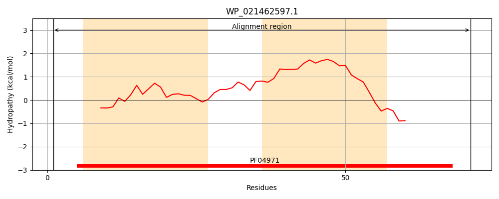
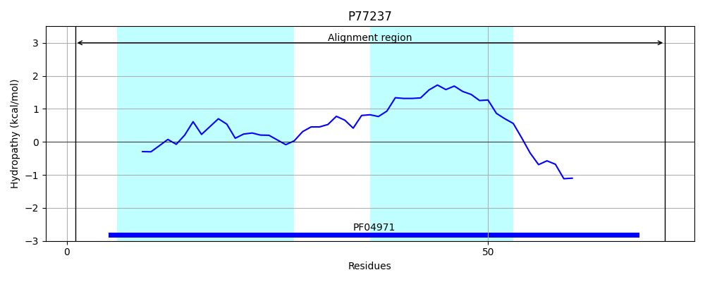
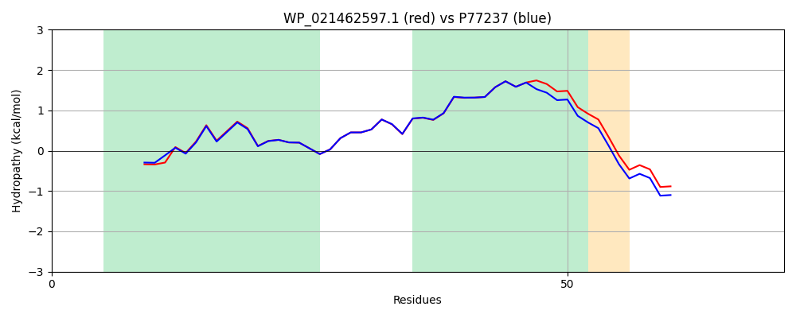

Hit Accession: P77237
Hit TCID: 1.E.1.1.2
Hit Description: gnl|BL_ORD_ID|11489 gnl|TC-DB|P77237|1.E.1.1.2 Lysis protein S homolog from lambdoid prophage Qin - Escherichia coli.
Mach Len: 71
e:0.000000
Query TMS Count : 2
Hit TMS Count: 2
TMS-Overlap Score: 2.000000
Predicted Substrates:CHEBI:25367;molecule
BLAST Alignment:
| Protein Hydropathy Plots: | |
|---|---|
|  |  |
Pairwise Alignment-Hydropathy Plot: | |
|  | |